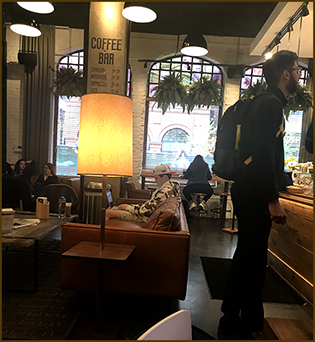
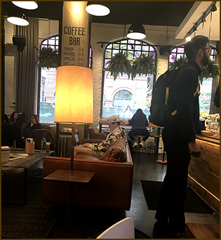

Riding the CTA bus is the least stressful mode of transportation for me. The drivers are polite and helpful. The passengers are generally tired and simply trying to get to work or home safely. However, sometimes there are interesting moments, like looking down on this elderly gentleman’s foot. Who would expect to see an elderly person wearing an ankle monitor.
Every Thursday after arriving via Metra at Union Station, I wave at an Elgin area minister who is preaching on a megaphone and then walk to Beatrix Market. It is a respite between public transportation and morning classes. Free WIFI, charging plugs, great coffee, and good food. The ultimate loop spot to relax and regroup.
top